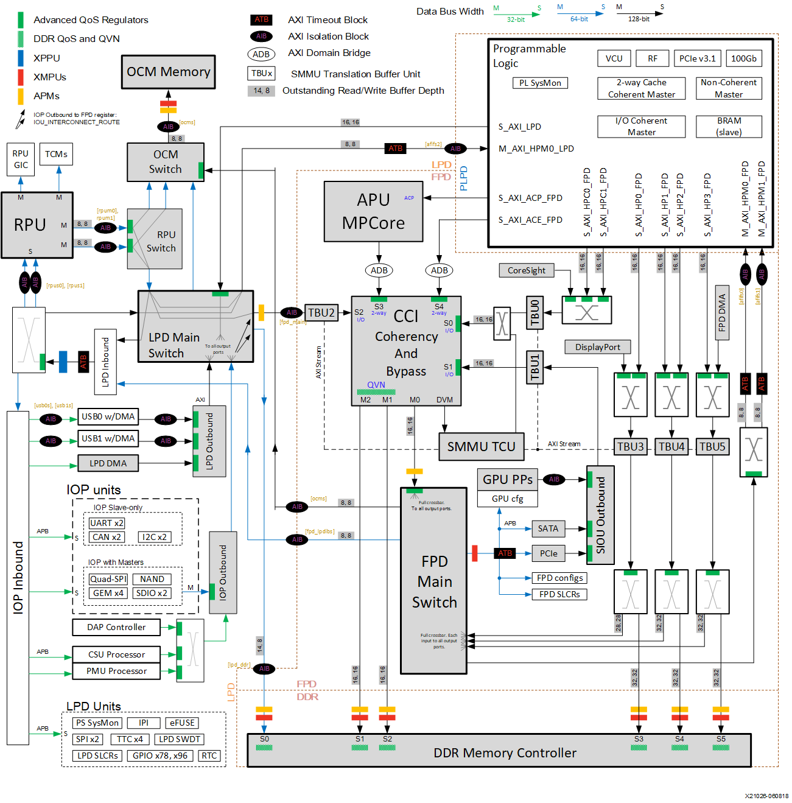
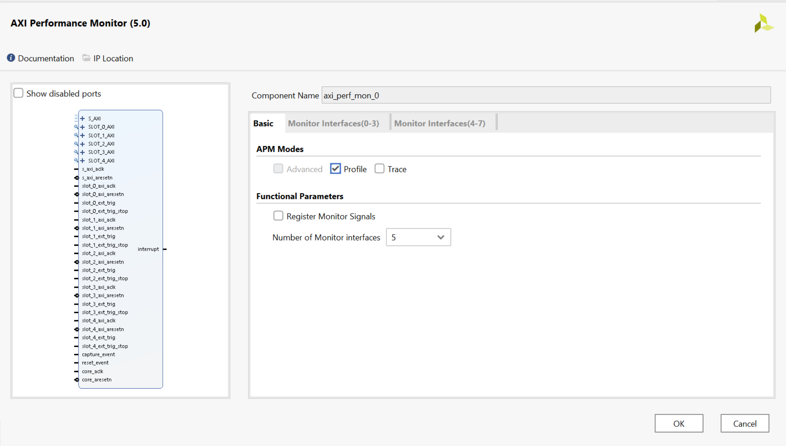
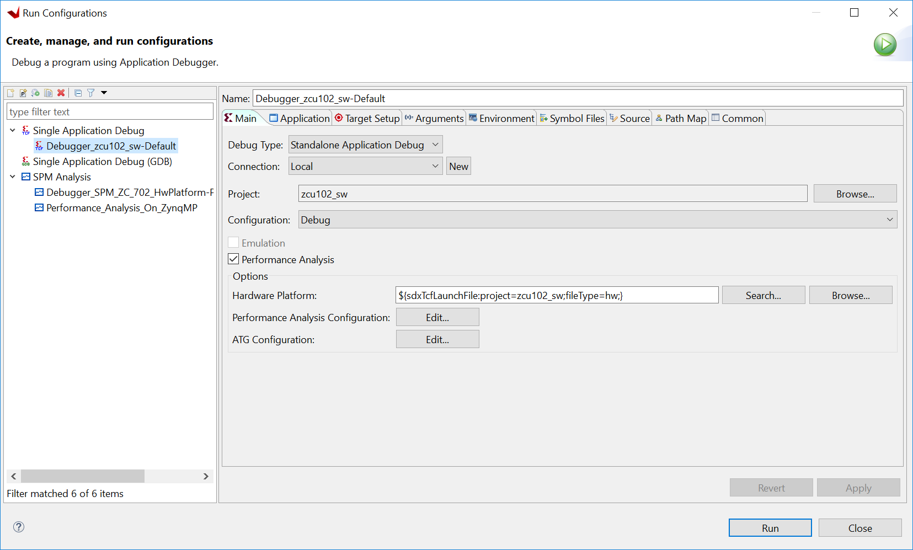
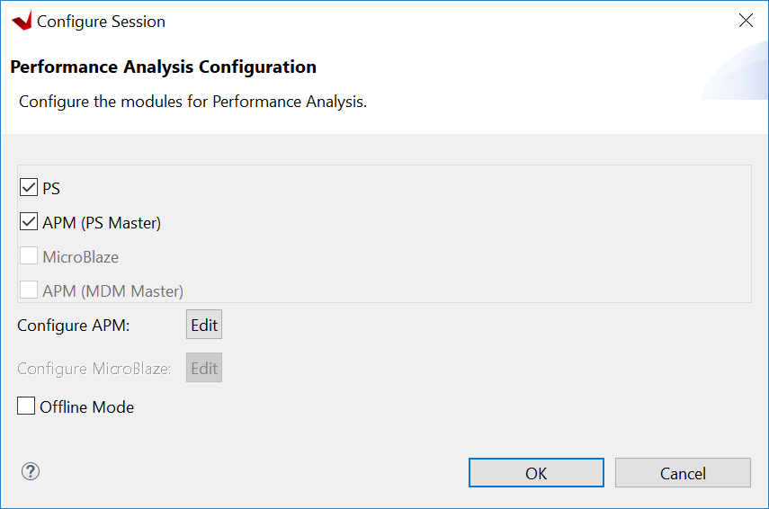
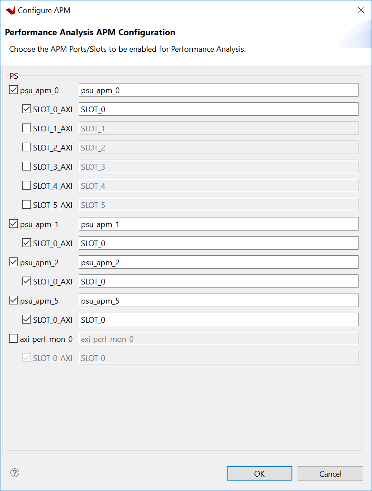
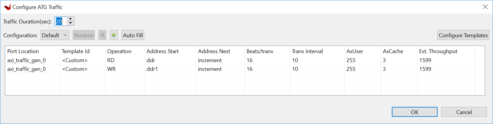

Using SPA with a Custom Target¶
To use the Vitis™ IDE system performance analysis toolbox with your design, there are three important items to be aware of:
Instrumenting your hardware
Instrumenting your software
Monitoring a live, custom target within the Vitis IDE.
Instrumenting Hardware¶
As long as your design include the AXI Performance Monitor (APM) IP, you can make use of the Vitis IDE performance analysis features to visualize the AXI performance. The Vitis IDE performance analysis can also make use of AXI Traffic Generator IP in your system, if it is configured and connected properly. So, you can create hardware designs similar to the pre-built SPM projects.
Instantiate APM IP¶
The Zynq UltraScale+ MPSoC has some hardened APM IP blocks in the PS. They can be used to monitor the AXI performance for DDR, CCI, OCM and LPD. Check the yellow blocks in the following diagram.

The Vitis IDE performance analysis can make use of the PS built-in APM (blocks in yellow in the diagram above) as well as user-instantiated APM IPs in the PL. You can instantiate the APM in PL to monitor the performance of AXI interfaces between PS and PL for Zynq-7000 devices and Zynq UltraScale+ MPSoCs.
Figure 44: AXI Performance Monitor

The previous figure shows how an instance of an APM appears in a Vivado® Design Suite IP integrator block diagram, as well as its configuration panel. The following steps give an example of adding an IP, connecting it, and configuring it. For more information about the Vivado IP Integrator, see the Vivado Design Suite Tutorial: Embedded Processor Hardware Design UG940 and Zynq UltraScale+ MPSoC Embedded Design Tutorial UG1209.
Add the APM IP to your Vivado design:
In the IP integrator block diagram, click the Add IP button.
Search for AXI Performance Monitor and double-click it.
Customize the APM IP.
Double-click the APM to open the Re-customize IP dialog box. In this dialog box, set the following:
Set APM Mode to Profile.
Set the Number of Monitor interfaces to the number of interfaces you want to monitor. For this example, choose 5.
Click OK to close the window.
Connect the APM to your design:
Connect S_AXI to the General Purpose AXI Interface on the Processing System (via AXI interconnect). You can use this interface to read and write APM registers from PS.
Connect s_axi_aclk and s_axi_aresetn to the clock and reset associated with S_AXI above.
Connect the SLOT_x_AXI ports (where x=0…4) to any AXI interfaces you want to monitor, such as S_AXI_HPx, and ACP on Zynq-7000 devices, and S_AXI_HPx, S_AXI_HPCx, or S_AXI_ACE on Zynq UltraScale+ MPSoCs.
Connect all inputs slot_x_axi_aclk and slot_x_axi_aresetn to the appropriate clocks and resets. They are used for the monitor AXI interfaces.
Connect core_aclk and core_aresetn to the clock/reset with the highest clock frequency.
Instantiate AXI Traffic Generator IP¶
If you have not implemented your traffic IP during the system performance evaluation, you can use the AXI Traffic Generator to mimic its throughput to test the system performance. The AXI Traffic Generator is optional to SPA.
Follow these steps to add, configure, and connect the ATG IP to your Vivado design.
Add ATG IP to your Vivado design:
In the IP integrator block diagram, click the Add IP button.
Search for AXI Traffic Generator and double-click it.
Customize the ATG IP
Note: You can use most of the default ATG settings. Note that the master interface of the ATG should match the width of the AXI interface test.
Double-click the ATG to open the Re-customize IP dialog box. In this dialog box, set the following:
Set Data Width of Master Interface section to the AXI interface width you want to test. For this example, set it to 128. Change the settings accordingly if the AXI interface you want to monitor has some special settings.
Click OK to close the window.
Connect the ATG IP to your design by doing the following:
Connect S_AXI to the General Purpose AXI Interface on the PS (via AXI interconnect). You can use this interface to read and write APM registers from PS.
Connect s_axi_aclk and s_axi_aresetn to the clock and reset associated with S_AXI above.
Connect the M_AXI ports to any AXI interfaces you want to test, such as S_AXI_HPx, and ACP on Zynq-7000 devices and S_AXI_HPx_FPD, S_AXI_HPCx, or S_AXI_ACE on Zynq UltraScale+ MPSoCs (through AXI Interconnect or AXI SmartConnect).
Connect irq_out to the PL-PS IRQ input of PS. You can connect it through a Concat IP, if there are multiple interrupt inputs to the PS.
Export to Vitis IDE¶
To configure the Vitis IDE to read the hardware design, generate a platform, and read the APM and ATG related information, follow these steps:
In the Flow Navigator pane, click Generate Bitstream.
After the bitstream is generated, export the design using the File → Export→ Export Hardware → Include bitstream.
Select the name and path to save this XSA.
After exporting the design, launch the Vitis IDE by selecting Tools → Launch Vitis IDE.
The following up steps in Vitis IDE are described in Monitoring a Custom Target Chapter.
Instrumenting Software¶
The processing system of Zynq-7000 devices and Zynq UltraScale+ MPSoCs have built-in modules to monitor the characteristics like processor utilization, CPU instructions per cycle, L1 cache miss rate, L1 data cache access per ms, CPU write stall cycle per instruction, and CPU read stall cycle per instructions. They are reported during live monitoring with any PS applications.
Monitoring function runtime, throughput, and latency are metrics to measure the software performance. They can be calculated using straightforward instrumentation available in the standalone BSP defined in the xtime_l.h header.
Insert a call to XTime_GetTime() before and after every benchmark. The difference between these two XTime values can be converted to seconds (or ms) using the COUNTS_PER_SECOND value provided in xtime_l.h. As the amount of data sent during any given benchmark is known, you can also calculate the achieved bandwidth and average latency during that particular benchmark.
Following is a sample instrumented C/C++ software code:
#include <stdlib.h>
#include <stdio.h>
#include <unistd.h>
#include "xtime_l.h" // XTime_GetTime()
// Macros
#define TIMEDIFF(t1,t2) (t2 - t1)
#define MILLISECONDS(t) (1000.0 * t / COUNTS_PER_SECOND)
// Globals
XTime start, end;
// Start a test
void startTest()
{
XTime_GetTime(&start);
}
// End a test
void endTest()
{
XTime_GetTime(&end);
double time_curr = TIMEDIFF(start, end);
double msec = MILLISECONDS(time_curr);
printf("Run-time = %.2f msec...\n", msec);
// Achieved Bandwidth = (total bytes transferred) / (msec)
// Average Latency = (msec) / (total memory accesses)
}
// Dummy test
void runSomething(int time)
{
sleep(time);
}
int main(void)
{
startTest(); runSomething(1); endTest();
startTest(); runSomething(2); endTest();
return 0;
}
The software run time calculation is controlled by the application itself. The Vitis IDE would show a PS-related performance matrix from the Performance Analysis perspective. Check the steps in Monitoring a Custom Target to configure this. Function level software runtime can also be checked by profiling tools. Profiling is beyond the scope of this document. See the Vitis Unified Platform Embedded Software Development Guide UG1400 for more details.
Monitoring a Custom Target¶
The Vitis IDE provides the capability to monitor a running target, as well as controlling the ATG IP in the hardware design.
Prepare a platform project before running the performance analysis because the Vitis IDE must be able to understand your hardware setup. For more details about creating a platform project, see the Vitis Unified Platform Embedded Software Development Guide UG1400.
Select File -> New -> Platform Project
Click Next in the welcome window.
Select the exported XSA from the Vivado IDE. Keep default settings of software specification and click Finish.
Click the hammer button to build the platform.
If you need to instrument software, you have to create a software application project with the source code you created. If you don’t need to evaluate software performance, you can create a hello world application instead to create a hello_world application as a stub to create the Run Configurations with Performance Analysis functions.
The steps to use performance monitor and ATG in Vitis IDE are as follows:
Right-click the software application project and select Run As → Run Configurations.
Figure 45: Target Setup in Debug Configuration (Using Imported Hardware Platform Specification)

Create the configuration by double-clicking Single Application Debug.
Enable Performance Analysis in the configuration as shown in the following figure.
Set the Performance Analysis Configuration and ATG Configuration, if required.
Enable or disable APM by clicking Edit of Performance Analysis Configuration
Enable or disable your custom APM by clicking Edit button of Configure APM.

The APM instance name will show in the following list.

Set up the ATG by clicking Edit on the ATG Configuration

Click Run to launch the run and see the performance analysis.